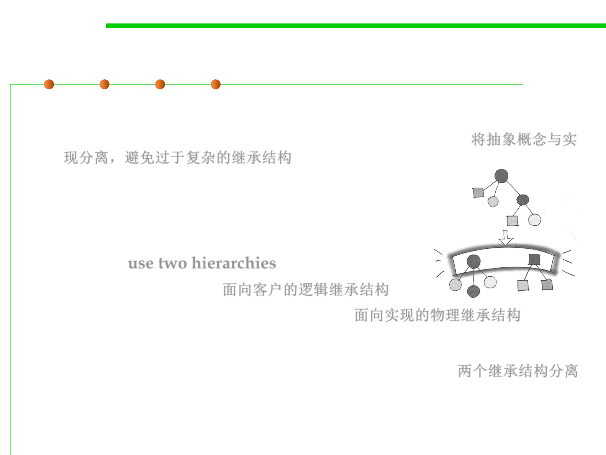

Bridge Pattern
6.2 Design Patterns for Maintainability
▪ Applicability
– Decouple abstract concept with different implementations 将抽象概念与实
现分离，避免过于复杂的继承结构
– Implementation may be switched at run-time
– Implementation changes should not affect clients
– Hide a class’s interface from clients
▪ Structure: use two hierarchies
– Logical one for clients 面向客户的逻辑继承结构
– Physical one for different implementations 面向实现的物理继承结构
▪ Object: to improve extensibility
– Logical classes and physical classes change independently 两个继承结构分离
– Hides implementation details from clients
▪ 将类的功能层次结构(abstract)与实现层次结构分离(implementation)